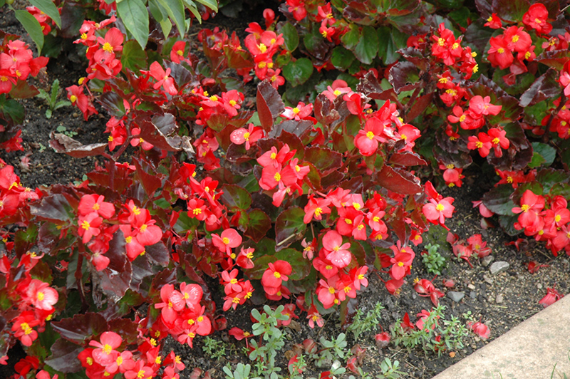
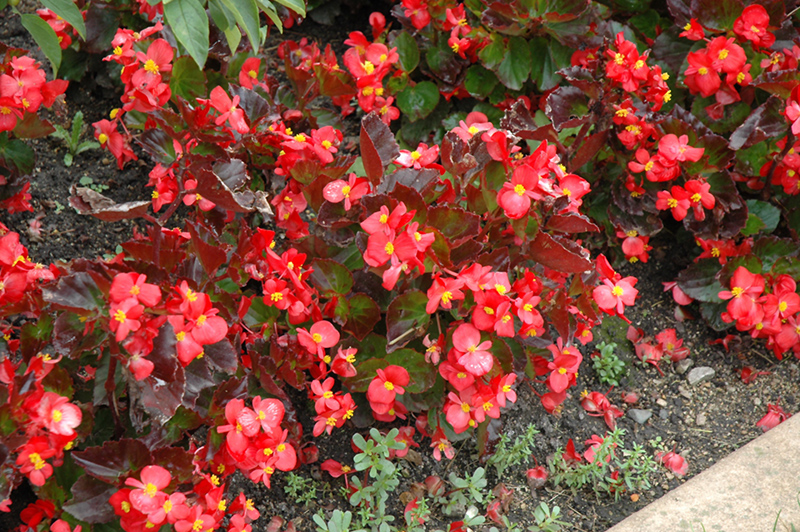

Common Name: 秋海棠
Botanical Name: Begonia
 

Other references
Gardeners' World
RHS
Grow begonias in peat-free, multi-purpose compost in dappled sunshine to partial shade. Plant tubers of tuberous begonias in spring. Only plant begonias outside in May, when no more frosts are forecast. Water regularly and feed weekly with a high potash fertiliser like tomato feed. In autumn, dig up tuberous begonias and store the tubers in a cool, frost-free spot for winter. Bring fibrous-rooted types indoors over winter, or treat as annuals and throw on the compost heap. Foliage begonias are grown as house plants but can enjoy time outdoors in summer.
'Rose With Bronze Leaf' is a vigorous, tender evergreen perennial which is often grown as an annual. Fleshy stems produce waxy, heart-shaped leaves which can be dark bronze to green in colour. Loose clusters of single, dark pink flowers are produced during the summer months.